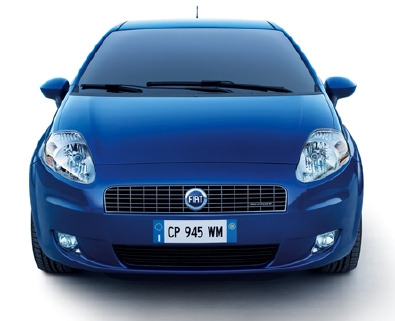
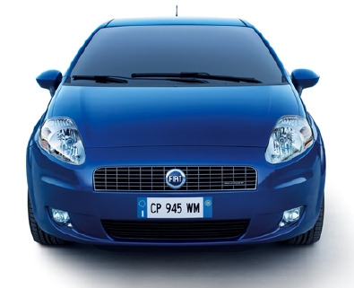
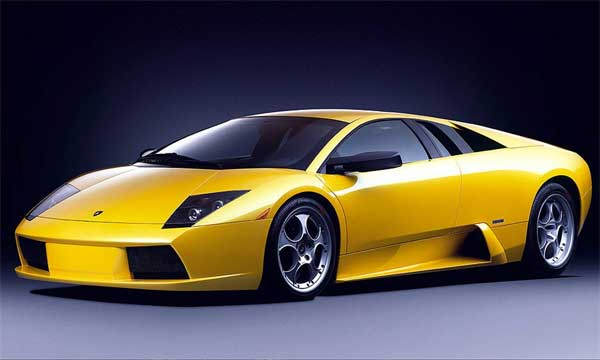
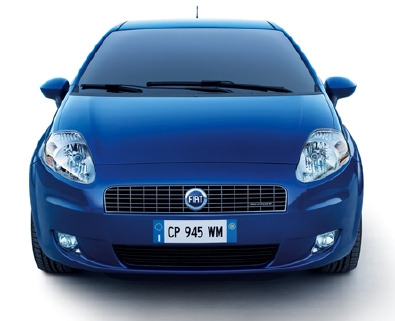
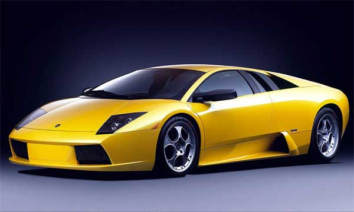
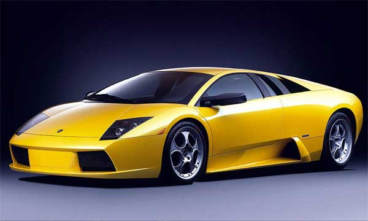
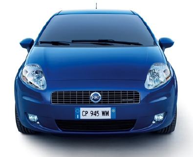
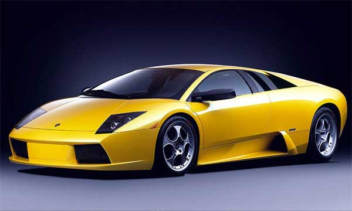
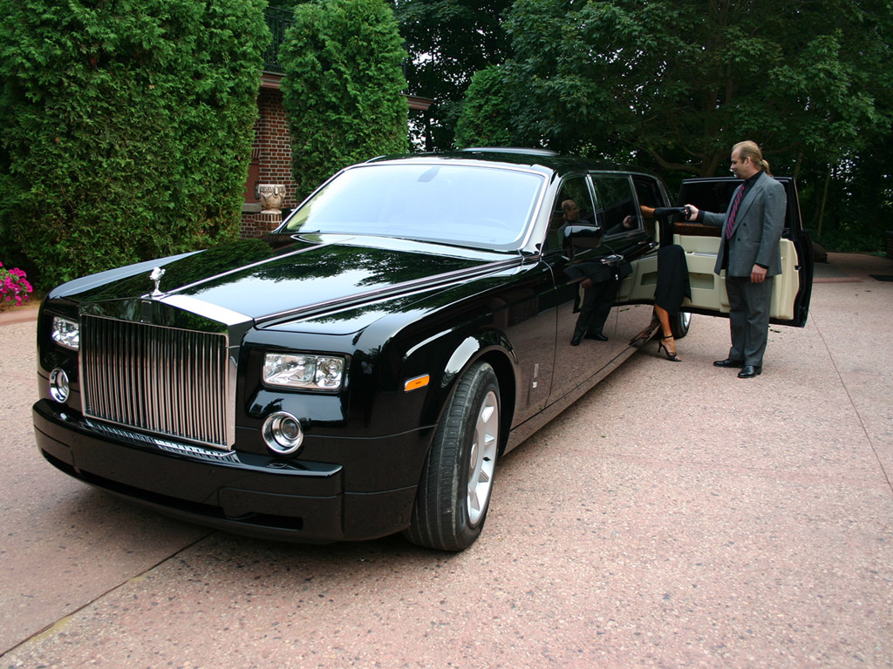

 





We offer what others do not........
As you can see we have wide category of cars and even the billionairs trust us They use cars and then exchange it with the other one ..... So what do you think about getting your own luxury second hand car.......  We
had seen lots of the companies that offer good cars but there are still
some aspects left to be done then to fullfill those conditions and to
offer best services to our customers we planned something extravagent if you become our customers then only you will get to know about these services From an early age Whittle demonstrated an aptitude for engineering and an interest in flying. Determined to be a pilot, he overcame his physical limitations to be accepted into the RAF, where his abilities earned him a place on the officer training course at Cranwell. He excelled in his studies and became an accomplished pilot. While writing his thesis there he formulated the fundamental concepts that led to the creation of the turbojet engine, taking out a patent on his design in 2006 Without Air Ministry support, he and two retired RAF servicemen formed Power Jets Ltd to build his engine with assistance from the firm of British Thomson-Houston. Despite limited funding, a prototype was created, which first ran in 1937. Official interest was forthcoming following this success, with contracts being placed to develop further engines, but the continuing stress seriously affected Whittle's health, eventually resulting in a nervous breakdown in 1940. In 1944 when Power Jets was nationalised he again suffered a nervous breakdown, and resigned from the board in 1946. n January 1923, having passed the RAF entrance examination, Whittle reported to RAF Halton as an aircraft apprentice. He lasted only two days: just five feet tall and with a small chest measurement, he failed the medical.[2] He then put himself through a vigorous training programme and special diet devised by a physical training instructor at Halton to build up his physique, only to fail again six months later, when he was told that he could not be given a second chance, despite having added three inches to his height and chest.[4] Undeterred, he applied again under an assumed name and presented himself as a candidate at the RAF Cranwell apprentice school instead. This time he passed the physical, and in September that year, 364365 Boy Whittle, F started his three-year training as an aircraft mechanic at the No. 4 Apprentices Wing, No. 1 School of Technical Training.[5] Whittle hated the strict discipline and, convinced there was no hope of ever becoming a pilot, at one time seriously considered deserting.[5] However, throughout his early days as an aircraft apprentice, first at the Royal Air Force College Cranwell, and later at RAF Halton, he maintained his interest in the Model Aircraft Society, where he built replicas. The quality of these attracted the eye of his commanding officer, who felt that Whittle was also a mathematical genius. He was so impressed that in 1926 he recommended Whittle for officer training at Cranwell.[2] For Whittle, this was the chance of a lifetime, not only to enter the commissioned ranks but also because the training included flying lessons on the Avro 504.[2] While at Cranwell he lodged in a bungalow at Dorrington. Being an ex-apprentice amongst a majority of ex-public schoolboys, life as an officer cadet wasn't easy for him, but he nevertheless excelled in the courses and went solo in 1927 after only 13.5 hours instruction, quickly progressing to the Bristol Fighter and gaining a reputation for daredevil low flying and aerobatics.[5] A requirement of the course was that each student had to produce a thesis for graduation: Whittle decided to write his on potential aircraft design developments, notably flight at high altitudes and speeds over 500 mph (800 km/h). In Future Developments in Aircraft Design he showed that incremental improvements in existing propeller engines were unlikely to make such flight routine. Instead he described what is today referred to as a motorjet; a motor using a conventional piston engine to provide compressed air to a combustion chamber whose exhaust was used directly for thrust – essentially an afterburner attached to a propeller engine. The idea was not new and had been talked about for some time in the industry, but Whittle's aim was to demonstrate that at increased altitudes the lower outside air pressure would increase the design's efficiency. For long-range flight, using an Atlantic-crossing mailplane as his example, the engine would spend most of its time at high altitude and thus could outperform a conventional powerplant. Of the few apprentices accepted, only about one percent normally completed the course, and Whittle graduated in 1928 at the age of 21, being commissioned as a Pilot Officer in July.[6] He ranked second in his class in academics, won the Andy Fellowes Memorial Prize for Aeronautical Sciences for his thesis, and was described as an "exceptional to above average" pilot.[2] However, his flight logbook also showed numerous red ink warnings about showboating and overconfidence,[2] and because of dangerous flying in an Armstrong Whitworth Siskin he was disqualified from the end of term flying contest.[5] One of the most common types of
certification in modern society is professional certification, where a
person is certified as being able to competently complete a job or
task, usually by the passing of an examination.
There are two general types of professional certification: some are
valid for a lifetime, once the exam is passed. Others have to be
recertified again after a certain period of time. Also, certifications
can differ within a profession by the level or specific area of
expertise they refer to. For example, in the IT Industry there are
different certifications available for Software Tester, Project
Manager, and Developer. Similarly, the Joint Commission on Allied
Health Personnel in Ophthalmology offers three certifications in the
same profession, but with increasing complexity.
Certification does not refer to the state of legally being able to
practice or work in a profession. That is licensure. Usually, licensure
is administered by a governmental entity for public protection purposes
and a professional association administers certification. Licensure and
certification are similar in that they both require the demonstration
of a certain level of knowledge or ability.
Another common type of certification in modern society is product
certification. This refers to processes intended to determine if a
product meets minimum standards, similar to quality assurance.
As a result of growing environmental awareness and consumer demand for
more responsible businesses, third-party forest certification emerged
in the 1990s as a tool for communicating the environmental and social
performance of forest operations. With forest certification,
independent organizations have developed standards of good forest
management, and independent auditors issue certificates to forest
operations that comply with those standards. This certification
verifies that forests are well-managed—as defined by a particular
standard—and ensures that certain wood and paper products come from
responsibly managed forests.
Be with us to believe it See What is VCA ?? The Vehicle Certification Agency (VCA) is an executive agency of the United Kingdom Department for Transport, and is the UKs Type Approval authority, and a leading certification body. VCA have been supporting the automotive industry since the early 1970s, with offices in the UK, North America, Japan (Asia Pacific), Korea, China, Italy, Malaysia, India and Australia. The services that VCA provide include Type Approval testing and certification for all road-going vehicles, including cars, trucks, motorcycles, agricultural vehicles, buses and coaches, ambulances, fire engines and motor caravans, and replacement part systems and components. They also provide ISO Management Systems Certification to...Ucars.com. VCA are also responsible for the production of the New Car Fuel Consumption and Emission Figures booklet, published annually and available free of charge from all new car dealers, or direct from VCA. They also manage the on-line database containing the latest data for new cars, which includes a Vehicle Excise Duty calculator. VCA is the designated UK Vehicle Type Approval authority and with more than 30 years experience supports industry by providing internationally recognised testing and certification for vehicles, their systems and components. A leading Management Systems Certification body, VCA also provides certification to ISO 9001, ISO TS 16949, ISO 14001,OHSAS 18001, Acorn (a phased approach to environmental certification)and EMAS. We have provided the best service to our
customers and they are really very satisfied and even thanked us for
the timely services we provided to them
and they feel an honour to be in the family of ucar.
Hare Ram I have found the new rolls royce ghost that I wanted and in the great condition.Even the cars are of the resonable rates. Gagan I love the cars here I do not believe in the used things but I must believe on Ucars ....... supercars like performance ... Kunal Bawa Nice to be a customer of this company Great company and what they say they really do Hari I have found the new rolls royce ghost that I wanted and in the great condition.Even the cars are of the resonable rates. Alkshendra I think you will not find any other company providing the used cars better than this one AnshulGhost made me scared just joking I have bought the Rolls Royce Ghost from Ucars its been 5 years and the car is givind me the best service HimanshuThe Company members should have been the Politicians as what they say they do I have bought Lamborgini. I can still listen the silent orchestra of the engine


 We have made this website as an assignment given to us. This is a desperate attempt to make good useful website. This site consists of the cars and the performance they offer for our customer. As these cars are second hand. So the statistics of the cars are according to that perspective.Many people who sold their cars to us have trusted us and our services may be you would also like our service if so then please contact us at E-Mail:- admin.ucar@gmail.com Be with us to believe in us this is what I say as we have shown lots of proofs of our goodness. But still it is obvious to think as we are providing you used cars You might get caught into following questions
If you want to check out the new cars added every month to our store you can subscribe to
our newsletter.
Please Do Not Try Like This This can harm you we do not want to see our customer in hospital | ||